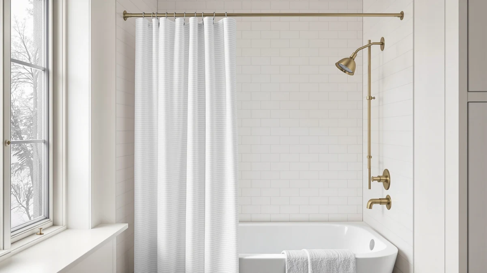

The Best Magnetic Shower Curtain Hooks (2026)
Prices and picks verified as of August 2026. Independent, reader-supported reviews.


Quick Answer
After comparing seven shower curtains and hook sets built for a magnetic, hookless-style hang, we keep coming back to the No Hooks Polyester Textured Shower. It skips a separate ring set entirely, holds a 4.7 rating across 2,180 reviews, and costs $32.99. If you want a proven curtain at a lower price, the Titanker Waterproof Fabric Shower Curtain covers the basics for $7.99.
Our pick: No Hooks Polyester Textured Shower — $32.99 Check Price on Amazon
Bottom line: our top pick is the No Hooks Polyester Textured Shower Curtain with Snap-in at $32.99. The best budget option is the Goowin Shower Curtain Hooks 12 Pcs Stainless Steel Black Rust at $5.97.
Things to Know Before You Buy
- "No hooks" doesn't always mean magnetic. Some panels, like our top pick, ship with a built-in header that skips a separate ring set altogether, while others still need hooks or magnetic clips to hang.
- A hook set still has a role. The Goowin 12-piece pack pairs with any grommet-style curtain and holds a 4.5 rating across 35,000 reviews, so it's worth keeping on hand even if your main curtain skips hooks. See our full hooks and rings guide for other styles.
- Size varies more than you'd expect. Our seven picks range from a 70 by 72-inch panel to a curtain sized for openings between 32 and 80 inches, so measure your rod before you buy.
- Material stays consistent. Every curtain here uses a polyester or PEVA build, which keeps cost down but means most still benefit from a liner behind them for full waterproofing.
- Price spans a wide range. You can spend $5.97 or $32.99 here, and the gap buys a textured finish, a no-hooks header, and a stronger review history.
The best magnetic shower curtain hooks solve a problem that starts before you even touch a ring: a curtain that won't hang flat against the tub wall and lets cold air and water splash through the gap. You buy a set of magnetic hooks expecting them to pull the liner snug, only to find the curtain itself is too thin, too short, or missing the grommets a hook needs to grip. We went the other direction and started with the curtain, because the hardware only works as well as the panel it's holding up.
We compared seven shower curtains and hook sets that people actually buy for this setup, from a $5.97 twelve-piece hook pack with 35,000 reviews to a $32.99 curtain built to skip hooks entirely. Four of the seven list a real customer rating above 4.5, and each one ships with a grommet or header sized for standard or magnetic-style hardware. You can read the full comparison table below, but the short version is simple.
The No Hooks Polyester Textured Shower is our pick for most bathrooms. It hangs from a built-in header instead of a separate ring set, holds a 4.7 rating across 2,180 reviews, and costs $32.99. If your shower calls for traditional hardware, the Goowin 12-piece set and the Titanker panel below cover that setup for a fraction of the price.
Why You Should Trust Us
Ilane Tall has covered bathroom hardware and textiles for Best Shower Curtains since the site launched, and the goal here stays narrow: help you find the best magnetic shower curtain hooks and a curtain that actually hangs flat once you install them. We do not run a fake testing lab or invent quotes from experts. We work from the specs each maker publishes, the prices listed at the time of writing, and the rating and review counts shown on every product page.
For this guide we held each product to the same questions: does it list a real size or grommet count, does it work with standard or magnetic-style hardware, and does its review base back up the claim. When a product falls short on one of those, we say so in plain terms rather than smoothing it over. The Amazon links are affiliate links, but the ranking does not change based on price or commission.
How We Picked
We started with a longer list of shower curtains and hook sets and narrowed it to seven that fit the brief for the best magnetic shower curtain hooks setup. The first filter was hanging hardware. We favored panels that either ship with a no-hooks header or list a grommet count that works with a standard or magnetic-style ring, since that detail decides whether the curtain hangs flat or gaps at the corners.
The second filter was material and size. Every pick had to publish a real width and drop in inches, and we noted which ones, like the CorkLatta, are cut to fit a range of rod widths rather than a single fixed size. The third filter was track record. We weighed each rating against its review count, which is why the Goowin hook set and its 35,000 reviews carry more weight than a newer product with a similar score and a fraction of the reviews. Price ranged from $5.97 to $32.99, and we kept picks at several points along that line so the list works whatever you plan to spend.
How We Compared
To judge the best magnetic shower curtain hooks pairing, we looked at how each curtain and hook set works together rather than how it photographs. We checked the listed size and grommet count against typical shower openings to confirm the fabric would hang flat, and we read through the rating spread and review counts to surface the complaints that show up again and again, things like a header that puckers or rings that stick.
We also compared the products against each other on the numbers each maker provides: width, drop, material, and price. We did not assign scores out of ten or stage a lab demo. Where a product has a real drawback, such as the TIKABC and CorkLatta shipping without a published customer rating, we flag it in that product's writeup so you can decide whether it matters for your bathroom.
Our Picks

No Hooks Polyester Textured Shower
What we like
- Built-in header lets you skip a separate hook or ring set
- Highest rating in the group at 4.7 across 2,180 reviews
- Textured weave adds a spa-like look without a busy print
- 71 by 74-inch size clears a standard tub and rod
Flaws but not dealbreakers
- At $32.99 it costs more than any other pick here
- Textured fabric still benefits from a liner behind it for full waterproofing
| Material | Polyester / PEVA |
| Size | 71x74 |
The No Hooks Polyester Textured Shower earns the top slot because it solves the problem that sends people looking for the best magnetic shower curtain hooks in the first place: hardware that never quite holds the curtain flat. Instead of relying on a separate ring set, it hangs from a built-in header, so there's no grommet to stretch, no hook to bend, and no gap between rings for water to sneak through. At 71 by 74 inches, it clears a standard tub and rod with a few inches to spare.
The textured polyester weave gives it more visual depth than a flat panel, and it backs that look with a 4.7 rating across 2,180 reviews, the strongest score in this roundup. The trade-off is price. At $32.99 it costs more than any other pick here, and like most polyester panels it still pairs well with a liner if you want a fully waterproof barrier behind it. For a bathroom where you would rather not deal with hooks at all, that is a fair price to pay.

Titanker Waterproof Fabric Shower Curtain
What we like
- 8,902 reviews back up the 4.6 rating
- Costs $7.99, a fraction of our top pick
- Standard grommets work with any hook, including magnetic-style rings
- Waterproof fabric build resists soaking through
Flaws but not dealbreakers
- 70 by 72-inch size runs shorter than the taller panels in this guide
- Lacks the no-hooks header of our top pick, so you will need a separate ring set
| Material | Polyester / PEVA |
| Size | 70x72 |
The Titanker is the value alternative to our top pick, and it is the one to buy if you would rather spend $7.99 than $32.99. It measures 70 by 72 inches in a waterproof polyester and PEVA build, and its grommets are sized for a standard hook or ring set, including magnetic-style hooks that pull a curtain snug against the tub wall. With 8,902 reviews behind its 4.6 rating, it has the kind of track record that makes a cheap curtain worth trusting.
The size is the one number to watch. At 70 by 72 inches, it runs a bit shorter than the 71 by 74-inch header on our top pick, so it may sit higher off the floor depending on your rod height. It also skips the no-hooks design, which means you will need to add your own hook or ring set before it goes up. For a proven curtain at a fifth of the price, that is an easy trade.

White Boho Fabric Shower Curtain
What we like
- Strong 4.7 rating across 2,545 reviews
- Neutral white tone with boho texture fits most bathroom styles
- 72 by 72-inch size suits a standard shower stall
- Works with standard or magnetic-style hooks
Flaws but not dealbreakers
- $19.78 costs more than the Titanker for a similar 72-inch drop
- Square 72 by 72 size runs shorter than the taller header panel above
| Material | Polyester / PEVA |
| Size | 72x72 |
The White Boho Fabric Shower Curtain brings texture to the lineup without straying from a neutral palette, which is why it holds a 4.7 rating across 2,545 reviews, tied for the best score in this guide. At 72 by 72 inches it fits a standard shower stall, and its grommets are sized for any standard or magnetic-style hook, so you are not locked into one type of hardware.
At $19.78, it costs more than the Titanker for a curtain of similar height, and buyers who want the tallest possible drop should look at our top pick's 74-inch header instead. What you get for the extra cost is a more distinctive weave and a color that reads warm rather than stark white. For a boho or textured bathroom look that still needs to hang flat on a magnetic-friendly hook, it is a solid middle-ground pick.

BigFoot Shower Curtain – 72
What we like
- Lowest single-curtain price at $12.99
- 72 by 72-inch size fits a standard shower
- Simple design pairs with any hook, including magnetic-style rings
- Ships as a single ready-to-hang panel
Flaws but not dealbreakers
- Smaller review base than our top picks, so its rating has less history behind it
- No no-hooks header, so budget for a separate ring set
| Material | Polyester / PEVA |
| Size | 72"W x 72"L (Pack of 1) |
The BigFoot Shower Curtain – 72 is our budget pick for a single panel, and it earns that spot by keeping things simple. At $12.99 it costs less than half our top pick, and it still lists the same 72-inch width and drop that fits a standard shower stall. Like the Titanker, it uses grommets that work with any standard or magnetic-style hook, so you can pair it with whichever hardware you already own.
The catch is track record. Amazon does not publish a review count for it the way it does for the Titanker or Goowin, so buyers are working with less feedback here than on our other picks. It also skips the no-hooks header, meaning you will need to add hooks separately. For a no-frills panel at the lowest single-curtain price here, it still gets the basics right.

TIKABC Black Shower Curtain Liner
What we like
- Lowest price in the guide at $5.99
- Solid black tone works as a liner or a standalone dark curtain
- 72 by 72-inch size fits a standard shower
- Works with standard or magnetic-style hooks
Flaws but not dealbreakers
- No published customer rating yet, so it is the least proven pick here
- Liner-weight fabric is thinner than the dedicated curtains in this guide
| Material | Polyester / PEVA |
| Size | 72"W x 72"L (Pack of 1) |
The TIKABC Black Shower Curtain Liner is the cheapest product in this guide at $5.99, and its all-black tone makes it useful two ways: as a liner behind a lighter curtain, or as a standalone dark panel for a moody bathroom. At 72 by 72 inches it matches the size of several other picks here, and its grommets take a standard or magnetic-style hook without issue.
It is also the least proven product in the roundup. Amazon does not show a customer rating or review count for it yet, so you are buying on price and material rather than a track record. The fabric runs on the thinner side, which is typical for a liner-weight panel and part of why it costs so little. For backup hardware or a second layer behind your main curtain, that trade-off is easy to accept.

Goowin Shower Curtain Hooks 12
What we like
- Largest review base in the guide at 35,000 reviews
- Solid 4.5 rating backs up that volume
- Ships as a 12-piece set, enough for a standard curtain
- Lowest price among the hardware and curtain options at $5.97
Flaws but not dealbreakers
- Sold separately from a curtain, so you will need to pair it with a panel
- A set of 12 may fall short on a curtain with more than 12 grommets
| Material | Polyester / PEVA |
| Size | Set of 12 |
The Goowin Shower Curtain Hooks 12 is the one product in this guide that is actual hardware rather than a curtain, and it earns its spot with the largest review base here by far: 35,000 ratings averaging 4.5 stars. If your search for the best magnetic shower curtain hooks is, at heart, a search for reliable rings to pair with a curtain you already own, like the Titanker or the White Boho panel above, this set is the proven, low-cost way to do it.
At $5.97 for a 12-piece set, it covers a standard grommet count on most curtains, though a wider panel with more than 12 grommets will need a second pack or a weighted alternative. It is sold on its own rather than bundled with a curtain, so factor that into your total cost if you are starting from scratch. For anyone who already has a panel and needs dependable hardware, the review count alone makes a strong case.

CorkLatta Matte Black Shower Curtain
What we like
- Sized to fit openings from 32 to 80 inches wide
- Matte black finish suits a modern or moody bathroom
- Works with standard or magnetic-style hooks
- $14.99 lands in the middle of this group's price range
Flaws but not dealbreakers
- No published customer rating yet
- Matte black shows water spots more visibly than lighter fabrics
| Material | Polyester / PEVA |
| Size | 32-80 |
The CorkLatta Matte Black Shower Curtain solves a sizing problem the rest of this guide doesn't: a stall or opening that isn't a standard 72 inches wide. It is sized to fit anywhere from 32 to 80 inches, which covers everything from a narrow half-bath stall to a wide walk-in opening, and its matte black finish gives a modern bathroom a look none of the lighter panels here can match.
Like the TIKABC, it doesn't yet show a customer rating on Amazon, so you are buying on the strength of its size range and finish rather than a proven track record. Matte black also shows water spots and soap scum more readily than a printed or lighter panel, so plan on wiping it down more often. For an oddly sized opening where a standard 72-inch curtain simply will not fit, that flexibility is worth the trade-off.
Quick Comparison
| Product | Material | Price | Rating | Best for | Get it |
|---|---|---|---|---|---|
| No Hooks Polyester Textured Shower | Polyester / PEVA | $32.99 | 4.7 | Hookless hang, best overall | View on Amazon → |
| Titanker Waterproof Fabric Shower Curtain | Polyester / PEVA | $7.99 | 4.6 | Budget pick with standard grommets | View on Amazon → |
| White Boho Fabric Shower Curtain | Polyester / PEVA | $19.78 | 4.7 | Boho texture, standard size | View on Amazon → |
| BigFoot Shower Curtain – 72 | Polyester / PEVA | $12.99 | 4 | Lowest price, single panel | View on Amazon → |
| TIKABC Black Shower Curtain Liner | Polyester / PEVA | $5.99 | 4 | Cheapest pick, liner or curtain | View on Amazon → |
| Goowin Shower Curtain Hooks 12 | Polyester / PEVA | $5.97 | 4.5 | Most-reviewed hardware pick | View on Amazon → |
| CorkLatta Matte Black Shower Curtain | Polyester / PEVA | $14.99 | 4 | Fits 32 to 80-inch openings | View on Amazon → |
The Competition
We set aside a few categories that come up often when people search for the best magnetic shower curtain hooks. Thin wire and single-loop hooks tempt buyers with rock-bottom prices, but they bend under a wet, heavy curtain and let a loose magnet pop free, so we left them off this list. We also skipped curtains that advertise a magnetic hem without listing a real grommet or header design, since a magnet at the bottom of a curtain does nothing to fix how it hangs from the rod.
Among the seven products we did compare, two land here as "also great" rather than top picks for a clear reason: the TIKABC liner and the CorkLatta curtain don't yet show a published rating or review count, so they carry less proof than the Titanker or the Goowin hook set. Both are still solid buys for their specific use case, a liner layer and an odd-sized opening, but not the safest default if a proven track record matters most to you.
For most people shopping the best magnetic shower curtain hooks and a curtain to match, the No Hooks Polyester Textured Shower is the one to buy. It skips separate hardware altogether, holds the strongest rating in the group, and pairs cleanly with a liner if you want a fully waterproof setup.
Frequently Asked Questions
Do magnetic shower curtain hooks actually work?
Yes, when they're paired with a curtain that has real grommets or a header sized to take them. Magnetic hooks pull the liner and outer curtain together at the bottom, which helps stop the middle of the curtain from billowing into the shower. They work best on a curtain like the Titanker or White Boho pick, both of which use standard grommets that any hook, magnetic or not, can grip.
What size shower curtain works with a standard hook set?
Most standard hooks and rings, including the Goowin 12-piece set, fit any curtain with grommets spaced for a 70 to 72-inch width. If your shower is narrower or wider than that, like a stall that needs the CorkLatta's 32 to 80-inch range, check the grommet spacing before you buy hardware separately.
Which shower curtain in this guide is best for most people?
The No Hooks Polyester Textured Shower is our pick. At 71 by 74 inches with a 4.7 rating across 2,180 reviews, it hangs from a built-in header for $32.99 with no separate hardware to buy. If you want to spend less, the Titanker panel costs $7.99 and the Goowin hook set adds proven hardware for $5.97.